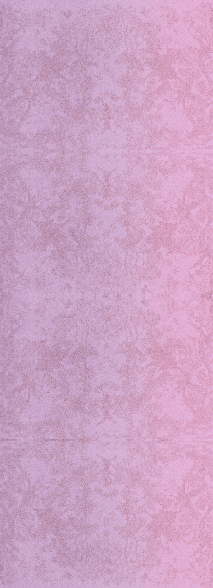
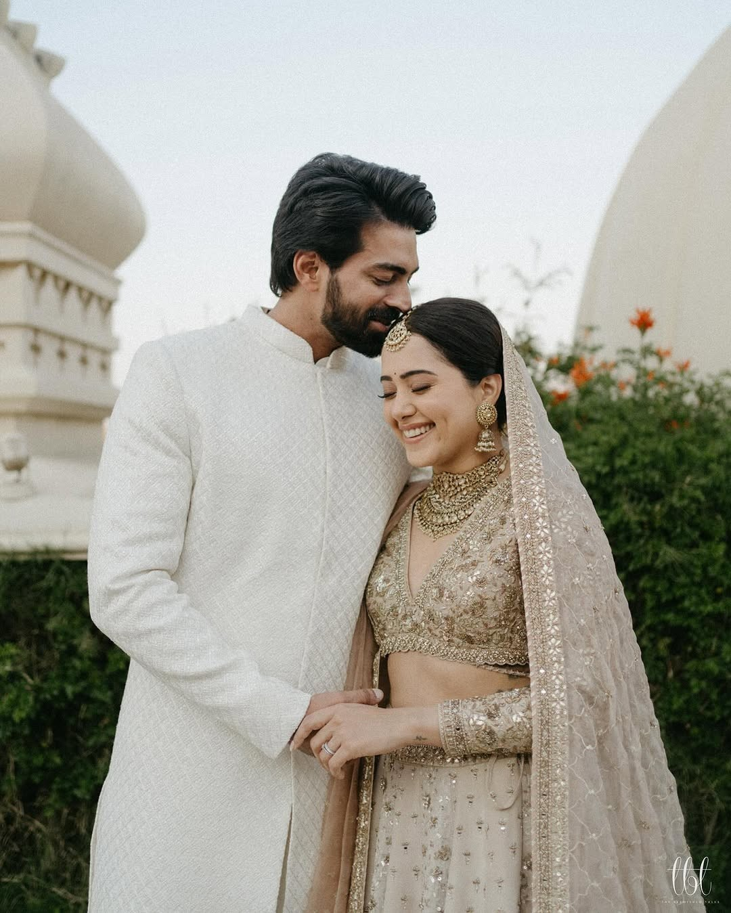
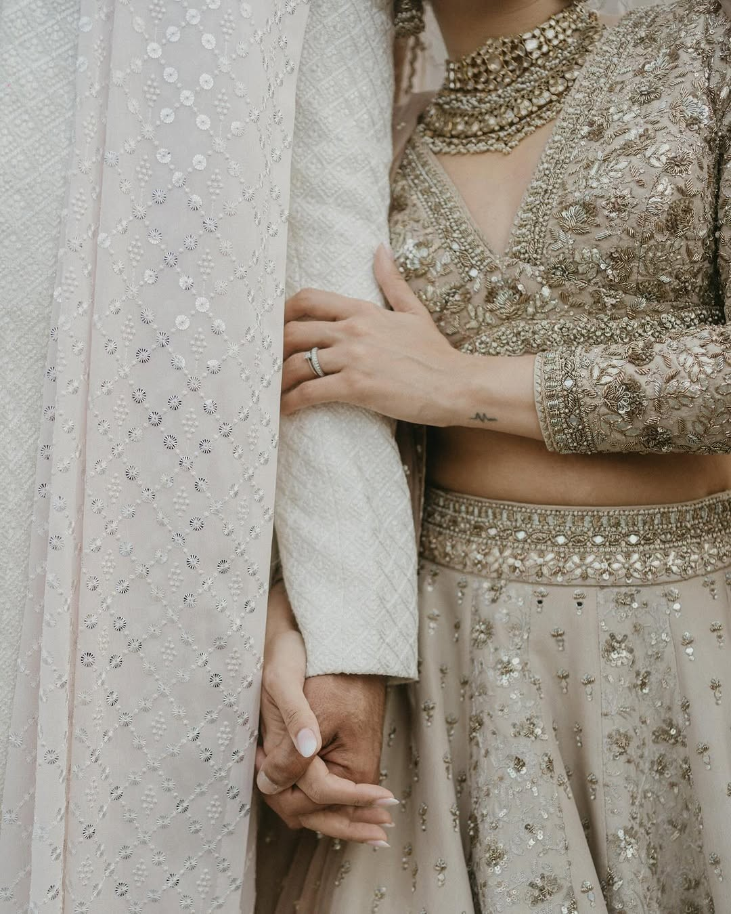
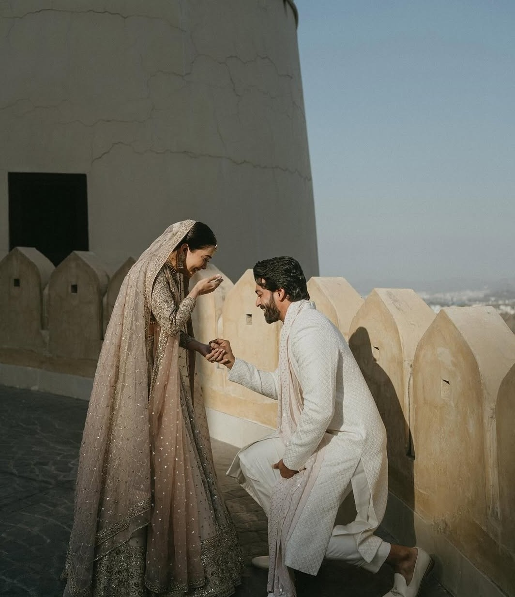
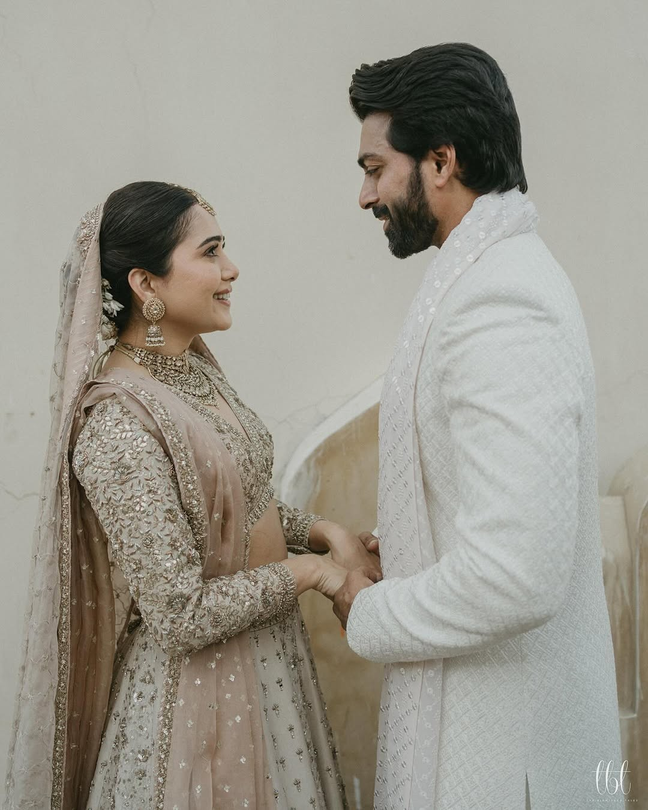
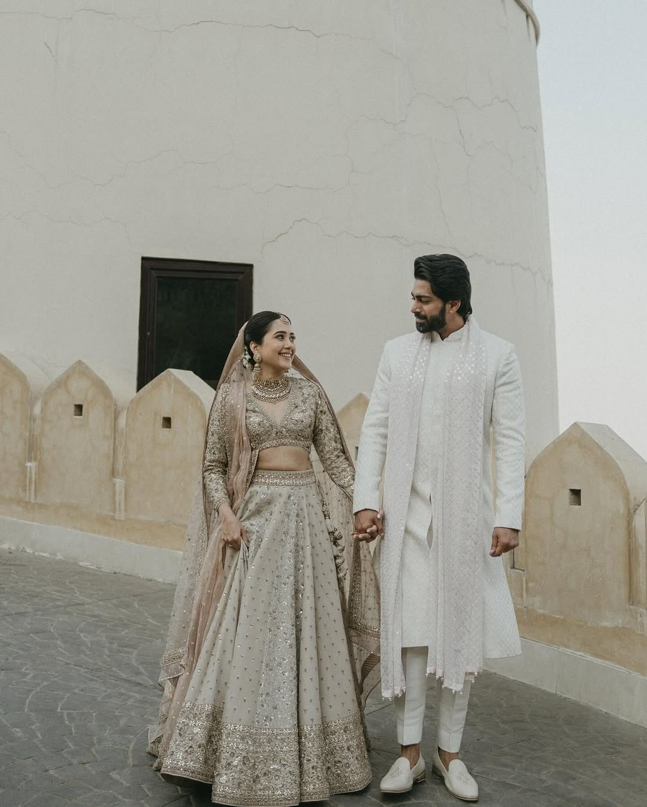
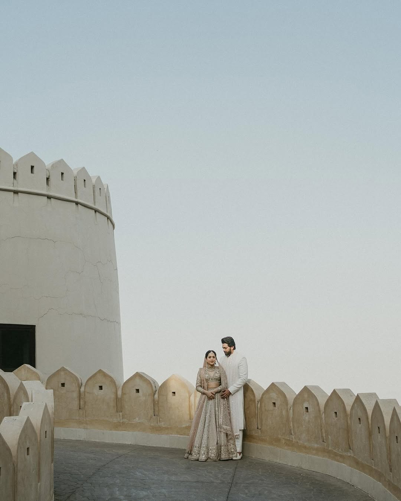

Dress
- Mehendi
- Bright greens and yellows
- Haldi
- Yellow, and something you do not mind staining
- Reception
- Formal — traditional or western
Shubh Vivah

वक्रतुंड महाकाय सूर्यकोटि समप्रभ । Vakratunda Mahakaya
21·02·2027
Together with their families
WEDDING
The Invitation
We would be honoured by your presence as we mark the beginning of our life together.
The Venue
Under the palms, an evening of light and ceremony.

Save the date
Scratch a coin to reveal what is on it.
Drag your finger across a coin
A note from us
Some days arrive quietly and change everything. Ours began long before either of us could have named it — in ordinary conversations, in shared silences, in the slow way one person becomes the other’s habit.
We have kept the good parts, learned from the difficult ones, and arrived here together. What follows is not an ending but a beginning: a first day of the rest of our lives, and we would rather spend it with people who made the journey worth taking.
Come for the ceremony. Stay for the food, the music, and the long arguments about who sang better. We have set aside a place for you in every part of it.
Abhishek and Kanika
Moments






Counting down
21 · 02 · 2027Sunday · 7:00 PM · Rajwada Lawns
Good to know
Your presence is the gift. If you would like to give something anyway, we are collecting towards a honeymoon and would be grateful for anything that helps.
Children are very welcome at the Mehendi and Haldi. The lawn is soft, there is space to run, and there will be people who are happy to keep an eye on them.
The run-up
One question, asked badly, answered immediately.
Taj Exotica Resort, from six in the evening.
Koregaon Park, from ten in the morning.
Rajwada Lawns, from seven in the evening.